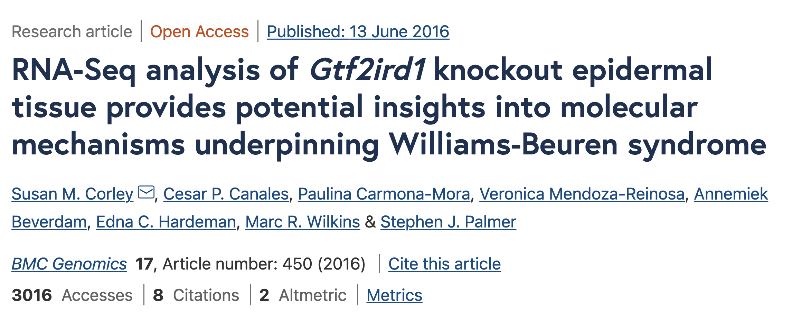
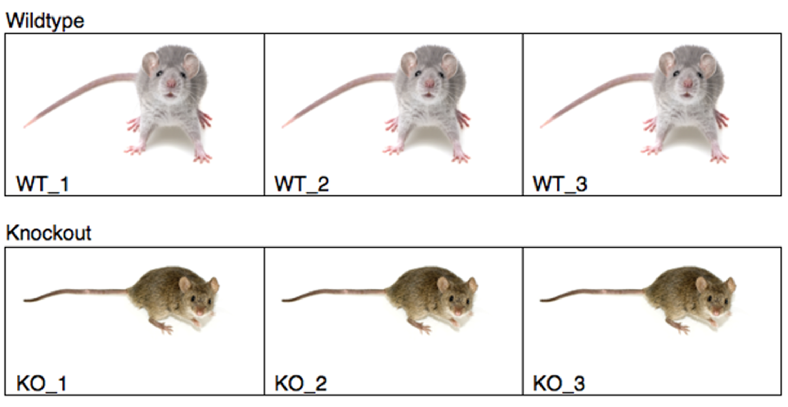

Revisit the case study
In this workshop series we are working with a real dataset from a knockout mouse model study by Corley et al. (2016). This study used the mouse model to study Williams-Beuren Syndrome (WBS), a rare genetic disease in people.

WBS affects multiple body systems and has physical, cognitive, and behavioural components. Previous studies of WBS patients with deletions of the 7q11.23 chromosomal region have led to the conclusion that a disruption of Gtf2ird1 and Gtf2i genes explain the features of WBS, including:
- Delays in prenatal and postnatal growth
- Short stature
- Intellectual disabilities
- Distinctive facial features
Corley et al. (2016) used lip tissue from a Gtf2ird1 knockout mouse model to capture phenotypic effects most present in the epidermal tissues. Gtf2ird1 is located on chromosome 5 (5qG2) of the mouse genome. We visualised this region of our alignment files using IGV, yesterday.
The study design
- 6 mice
- 3 knockouts (missing exon 1 of Gtf2ird1)
- 3 wildtypes
- Total RNA extracted from epidermal (lip) tissue
- 101 bp single end reads sequenced on Illumina HiSeq2000

Research questions
- Which genes (if any) are upregulated or downregulated in our knockout mice compared with normal mice?
- How do these differentially expressed genes relate to the disease phenotype?
All materials copyright Sydney Informatics Hub, University of Sydney